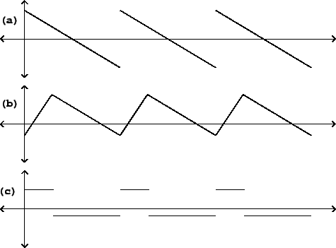
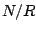
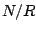

Up until now we have primarily taken three approaches to synthesizing repetitive waveforms: additive synthesis (Chapter 1), wavetable synthesis (Chapter 2), and waveshaping (Chapters 5 and 6). This chapter introduces a fourth approach, in which waveforms are built up explicitly from line segments with controllable endpoints. This approach is historically at least as important as the others, and was dominant during the analog synthesizer period, approximately 1965-1985. For lack of a better name, we'll use the term classical waveforms to denote waveforms composed of line segments.
|  |
They include the sawtooth, triangle, and rectangle waves pictured in Figure 10.1, among many other possibilities. The salient features of classical waveforms are either discontinuous jumps (changes in value) or corners (changes in slope). In the figure, the sawtooth and rectangle waves have jumps (once per cycle for the sawtooth, and twice for the rectangle), and constant slope elsewhere (negative for the sawtooth wave, zero for the rectangle wave). The triangle wave has no discontinuous jumps, but the slope changes discontinuously twice per cycle.
To use classical waveforms effectively, it is useful to understand how the shape of the waveform is reflected in its Fourier series. (To compute these we need background from Chapter 9, which is why this chapter appears here and not earlier.) We will also need strategies for digitally synthesizing classical waveforms. These waveforms prove to be much more susceptible to foldover problems than any we have treated before, so we will have to pay especially close attention to its control.
In general, our strategy for predicting and controlling foldover will be to
consider first those sampled waveforms whose period is an integer  . Then if
we want to obtain a waveform of a non-integral period (call it
. Then if
we want to obtain a waveform of a non-integral period (call it  , say) we
approximate
, say) we
approximate  as a quotient  of two integers. Conceptually at least,
we can then synthesize the desired waveform with period
as a quotient  of two integers. Conceptually at least,
we can then synthesize the desired waveform with period  , and then take only
one of each
, and then take only
one of each  samples of output. This last, down-sampling step is where the
foldover is produced, and careful handling will help us control it.
samples of output. This last, down-sampling step is where the
foldover is produced, and careful handling will help us control it.